Catch-at-age: assessment plots
2025-02-03
1 SET-UP
1.1 settings
source('0.0_settings.R')1.2 load all data
load(paste0(dir.rdat, "caa.Rdata"))
load(paste0(dir.rdat, "catch.caa.Rdata"))
load(paste0(dir.rdat, "lf.caa.Rdata"))
load(paste0(dir.rdat, "bio.caa.Rdata"))2 Input data plot
bio.caa$id <- with(bio.caa,paste(sample.id,year,period,region,gear),collapse='.')
bio.in <- ddply(bio.caa,c('year','period','region','gear'),summarise,n=length(id),N=length(unique(id)))
bio.in$input <- 'bio'
lf.caa$id <- with(lf.caa,paste(sample.id,year,period,region,gear),collapse='.')
lf.in <- ddply(lf.caa,c('year','period','region','gear'),summarise,n=length(id),N=length(unique(id)))
lf.in$input <- 'lf'
names(catch.caa)[5] <- 'N'
catch.caa$input <- 'catch'
cols <- c("year","period","region","gear","N","input")
all <- rbind(catch.caa[,cols],lf.in[,cols],bio.in[,cols])
all$input <- factor(all$input,levels=c("catch","lf","bio"))
fnames <- as_labeller(c(`catch` = "Débarquement / Landings (t)", `lf` = "Échantillons de fréquence de longueur (nombre) / Length-frequency samples (number)",`bio` = "Biologique (nombre de poissons) / Biological (number of fish)"))
p1 <- ggplot(all,aes(x=year,y=N,fill=gear))+
geom_bar(stat='identity')+
facet_wrap(input~.,scale='free_y',ncol=1,labeller = fnames)+
scale_y_continuous(expand = c(0,0))+
scale_x_continuous(expand = c(0,0), limits=c(1975,tail(my.year,1)+1))+
scale_fill_viridis_d(na.value = "grey50")+
theme(legend.position = 'top')+
labs(x='Année/Year',y='',fill='Enging / Gear')
ggsave(paste0("../../img/", tail(my.year,1),"/Samples_gear.png"), width=8, height=6, dpi=600, units="in")
## Warning: Removed 411 rows containing missing values or values outside the scale range (`geom_bar()`).
p2 <- ggplot(all,aes(x=year,y=N,fill=as.factor(period)))+
geom_bar(stat='identity')+
facet_wrap(input~.,scale='free_y',ncol=1,labeller = fnames)+
scale_y_continuous(expand = c(0,0))+
scale_x_continuous(expand = c(0,0), limits=c(1975,tail(my.year,1)+1))+
scale_fill_viridis_d(na.value = "grey50")+
theme(legend.position = 'top')+
labs(x='Année/Year',y='',fill='Période / Period')
ggsave(paste0("../../img/", tail(my.year,1),"/Samples_period.png"), width=8, height=6, dpi=600, units="in")
## Warning: Removed 411 rows containing missing values or values outside the scale range (`geom_bar()`).
p3 <- ggplot(all,aes(x=year,y=N,fill=region))+
geom_bar(stat='identity')+
facet_wrap(input~.,scale='free_y',ncol=1,labeller = fnames)+
scale_y_continuous(expand = c(0,0))+
scale_x_continuous(expand = c(0,0), limits=c(1975,tail(my.year,1)+1))+
scale_fill_viridis_d(na.value = "grey50")+
theme(legend.position = 'top')+
labs(x='Année/Year',y='',fill='Région / Region')
ggsave(paste0("../../img/", tail(my.year,1),"/Samples_region.png"), width=8, height=6, dpi=600, units="in")
## Warning: Removed 411 rows containing missing values or values outside the scale range (`geom_bar()`).
grid.arrange(p1,p2,p3,ncol=3)
## Warning: Removed 411 rows containing missing values or values outside the scale range (`geom_bar()`).
## Removed 411 rows containing missing values or values outside the scale range (`geom_bar()`).
## Removed 411 rows containing missing values or values outside the scale range (`geom_bar()`).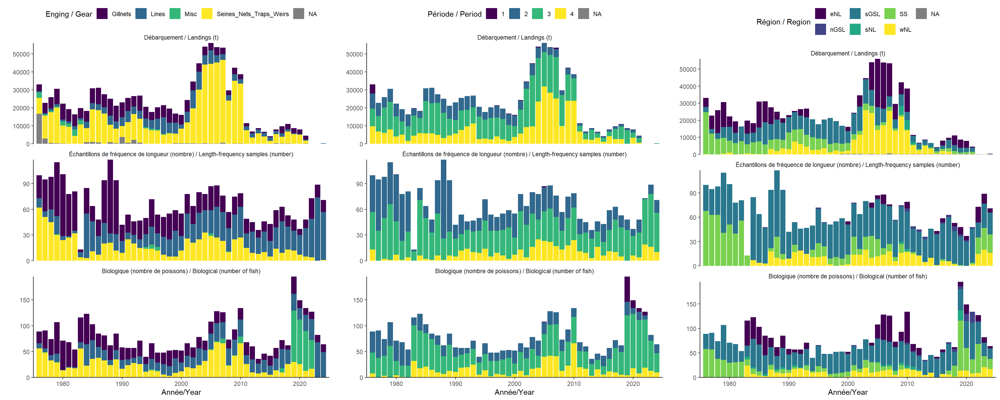
sample_export <- rbind(lf.in[,cols],bio.in[,cols])
sample_export$input <- factor(sample_export$input,levels=c("lf","bio"))
fnamesexport <- as_labeller(c(`lf` = "Length-frequency samples (number)",`bio` = "Biological (number)"))
p3ex <- ggplot(sample_export,aes(x=year,y=N,fill=region))+
geom_bar(stat='identity')+
facet_wrap(input~.,scale='free_y',ncol=1,labeller = fnames)+
scale_y_continuous(expand = c(0,0))+
scale_x_continuous(expand = c(0,0), limits=c(1975,tail(my.year,1)+1))+
scale_fill_viridis_d(na.value = "grey50")+
theme(legend.position = 'right')+
labs(x='',y='',fill='Region')
ggsave(paste0("../../img/", tail(my.year,1),"/Samples_EN.png"), width=8, height=4, dpi=600, units="in")
## Warning: Removed 35 rows containing missing values or values outside the scale range (`geom_bar()`).3 CAA plots
3.1 RAW
caa$zero <- caa$caan==0
ggplot(caa,aes(x=year,y=age))+
geom_point(alpha=0.8,aes(size=caan,col=zero))+
scale_size(range = c(1,12))+
scale_y_continuous(breaks=min(caa$age):max(caa$age))+
scale_color_manual(values=c('black','grey'))+
labs(x='Year',y='Age',size='Numbers',col='Zero')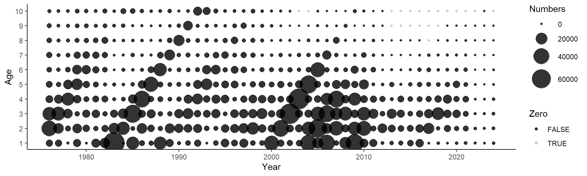
3.2 SPAY
d <- reshape2::dcast(caa,age~year,value.var = 'caan')
if(length(unique(d$year)) >1){
d <- cbind(age=d[,1],spay(d[,-1]))
d <- reshape2::melt(d,id.vars='age',variable.name='year',value.name='caan')
d$year <- as.numeric(as.character(d$year))
ggplot(d,aes(x=year,y=age))+
geom_point(alpha=0.8,aes(size=caan))+
scale_size(range = c(1,12))+
scale_y_continuous(breaks=min(caa$age):max(caa$age))
}3.3 SPAY: prop
d <- ddply(caa,c('year'),transform,caan.prop=caan/sum(caan))
CAA<- ggplot(d,aes(x=year,y=age))+
geom_point(alpha=0.8,aes(size=caan.prop,col=zero))+
scale_size(name="",range = c(1,12))+
scale_y_continuous(breaks=min(caa$age):max(caa$age))+
scale_color_manual(values=c('black','grey'), guide=F)
CAA + labs(x='Year',y='Age',size='Proportion',col='Zero')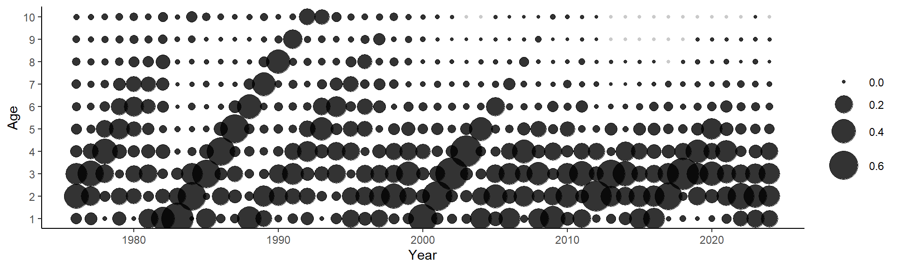
ggsave(paste0("../../img/",tail(my.year,1),"/CAA_EN.png"), width=8, height=4, dpi=600, units="in")
CAA + labs(x='Année',y='Âge',size='Proportion',col='Zero')ggsave(paste0("../../img/",tail(my.year,1),"/CAA_FR.png"), width=8, height=4, dpi=600, units="in")
CAA + labs(x='Année | Year',y='Âge | Age',size='Proportion',col='Zero')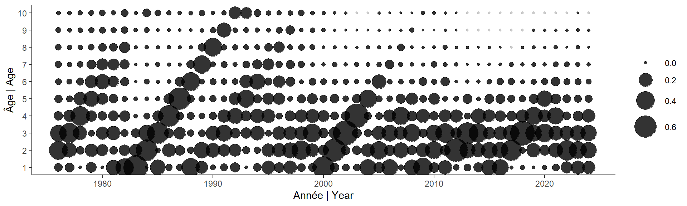
ggsave(paste0("../../img/",tail(my.year,1),"/CAA_BI.png"), width=8, height=4, dpi=600, units="in")
3.4 SPYA
d <- reshape2::dcast(caa,age~year,value.var = 'caan')
d <- cbind(age=d[,1],spya(d[,-1]))
d <- reshape2::melt(d,id.vars='age',variable.name='year',value.name='caan')
d$year <- as.numeric(as.character(d$year))
ggplot(d,aes(x=year,y=age))+
geom_point(alpha=0.8,aes(size=caan))+
scale_size(range = c(1,12))+
scale_y_continuous(breaks=min(caa$age):max(caa$age))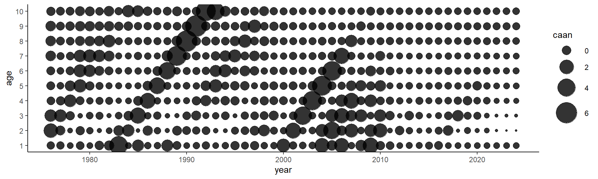
3.5 SPYA: prop
d <- ddply(caa,c('age'),transform,caan.prop=caan/sum(caan))
ggplot(d,aes(x=year,y=age))+
geom_point(alpha=0.8,aes(size=caan.prop))+
scale_size(range = c(1,12))+
scale_y_continuous(breaks=min(caa$age):max(caa$age))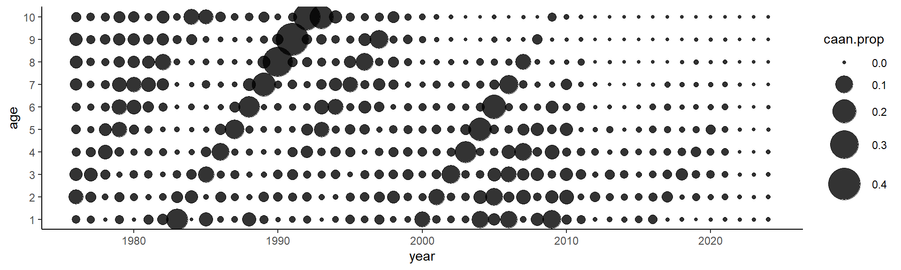
4 WAA
4.1 linear interpol
caa.old <- expand.grid(year=1968:max(caa$year),age=unique(caa$age))
caa.inter <- merge(caa.old,caa,all=TRUE)
caa.inter <- caa.inter[order(caa.inter$age,caa.inter$year),]
par(mfrow=c(5,2))
caa.inter$waa.interpol <- ddply(caa.inter,c('age'),summarise,waa.interpol=interpol(year,waa,"linear",from = 1968,to=max(caa.inter$year),title = age[1])[,6])[,2]
caa.inter <- caa.inter[order(caa.inter$year,caa.inter$age,decreasing = F),]
write.csv(caa.inter,paste0('../../csv/',tail(my.year,1),'/caa_interpol.csv'),row.names = FALSE)4.2 Plot
p <- ggplot(caa.inter,aes(x=year,y=waa.interpol,col=as.factor(age)))+
geom_line()+
scale_color_viridis_d()+
scale_x_continuous(expand=c(0,0))+
labs(y='Poids des captures | Catch weight (kg)',x='Année | Year')+
theme(legend.position = 'none')
p
p <- p+labs(y='Poids dans le captures (kg)',x='Année')
ggsave(paste0('waac_FR.png'),p,'png',paste0('../../img/', tail(my.year,1)),width = 15,height = 8,units = 'cm')
Try model smoothing. Not used because if changes to WAA, waa*caa does not equal total catch anymore. # Model predictions
caa$waa.cv <- 0.01 # need to calculate this!! this is absurdly small value so all predictions will match observed
caa[caa$caaw==0,'caaw'] <- NA # should be correct in get.caa function
waa.fit <- with(caa, armatrix.fit(year=caa$year,age=caa$age,x=caa$waa,cv=caa$waa.cv))
## Optimizing tape... Done
## Matching hessian patterns... Done
## outer mgc: 257.4022
## outer mgc: 257.4022
## 0: -321.51052: -1.78864 -1.21522 -0.923623 -0.752511 -0.610747 -0.520127 -0.435153 -0.398081 -0.312742 -0.276643 -2.30259 -2.30259 -2.30259 0.00000 0.00000 0.00000 0.00000
## outer mgc: 78.63275
## outer mgc: 44.37071
## outer mgc: 30.24502
## outer mgc: 30.66334
## outer mgc: 30.37784
## outer mgc: 30.26219
## outer mgc: 29.82469
## outer mgc: 29.53465
## outer mgc: 29.04191
## outer mgc: 28.64262
## 10: -372.63268: -1.79098 -1.21390 -0.932784 -0.753143 -0.623169 -0.522457 -0.446008 -0.408171 -0.329434 -0.294901 -2.43822 -2.51699 -2.10833 0.0269141 0.0505042 -0.0756293 -0.309758
## outer mgc: 28.16498
## outer mgc: 27.65021
## outer mgc: 27.4594
## outer mgc: 26.90053
## outer mgc: 28.10545
## outer mgc: 30.39295
## outer mgc: 25.1225
## outer mgc: 29.76431
## outer mgc: 29.91273
## outer mgc: 30.97462
## 20: -383.89150: -1.78967 -1.22622 -0.928609 -0.758510 -0.628747 -0.525185 -0.444153 -0.421127 -0.324825 -0.301165 -2.54902 -2.66564 -2.15877 0.0532946 0.0949301 -0.113701 -0.549303
## outer mgc: 33.53457
## outer mgc: 41.39215
## outer mgc: 22.60884
## outer mgc: 34.05722
## outer mgc: 38.88097
## outer mgc: 60.50861
## outer mgc: 19.82817
## outer mgc: 24.69663
## outer mgc: 19.07563
## outer mgc: 33.78468
## 30: -391.87387: -1.78706 -1.22475 -0.940820 -0.760269 -0.615169 -0.534088 -0.454795 -0.415239 -0.324025 -0.305984 -2.64358 -2.76077 -2.20349 0.0856402 0.140446 -0.167372 -0.794107
## outer mgc: 20.84802
## outer mgc: 18.58226
## outer mgc: 17.68721
## outer mgc: 17.31352
## outer mgc: 17.11191
## outer mgc: 16.81111
## outer mgc: 16.60199
## outer mgc: 16.39066
## outer mgc: 16.15268
## outer mgc: 15.94671
## 40: -395.42724: -1.79259 -1.22192 -0.936448 -0.763535 -0.623774 -0.531144 -0.448788 -0.416191 -0.335576 -0.299476 -2.68599 -2.79989 -2.21933 0.104136 0.164926 -0.195550 -0.911758
## outer mgc: 15.75152
## outer mgc: 15.54669
## outer mgc: 15.29226
## outer mgc: 15.09723
## outer mgc: 14.868
## outer mgc: 14.67397
## outer mgc: 14.44451
## outer mgc: 14.22758
## outer mgc: 14.02731
## outer mgc: 13.83043
## 50: -397.72166: -1.79518 -1.22259 -0.935298 -0.761540 -0.624130 -0.532386 -0.451048 -0.415928 -0.335763 -0.299635 -2.71929 -2.82023 -2.23514 0.126342 0.191982 -0.226444 -1.02297
## outer mgc: 13.59211
## outer mgc: 13.42843
## outer mgc: 16.87303
## outer mgc: 13.01371
## outer mgc: 12.82352
## outer mgc: 13.3889
## outer mgc: 12.4352
## outer mgc: 13.60037
## outer mgc: 12.06003
## outer mgc: 11.93022
## 60: -399.65738: -1.79506 -1.22190 -0.934064 -0.763566 -0.625308 -0.534397 -0.450817 -0.414682 -0.336568 -0.302836 -2.74487 -2.82785 -2.25002 0.156155 0.228171 -0.263015 -1.13232
## outer mgc: 12.36197
## outer mgc: 11.54507
## outer mgc: 17.4794
## outer mgc: 11.24178
## outer mgc: 15.349
## outer mgc: 12.0691
## outer mgc: 11.30238
## outer mgc: 10.60878
## outer mgc: 12.26177
## outer mgc: 10.25487
## 70: -401.27022: -1.79413 -1.22536 -0.933943 -0.765342 -0.625136 -0.533462 -0.449416 -0.417410 -0.337331 -0.304336 -2.76617 -2.83365 -2.26259 0.191584 0.272445 -0.300807 -1.23535
## outer mgc: 19.90878
## outer mgc: 10.01266
## outer mgc: 17.34229
## outer mgc: 11.67433
## outer mgc: 14.91804
## outer mgc: 10.49454
## outer mgc: 9.300605
## outer mgc: 9.055994
## outer mgc: 9.074544
## outer mgc: 9.439216
## 80: -402.70774: -1.79522 -1.22383 -0.935500 -0.766011 -0.625820 -0.536989 -0.449881 -0.419104 -0.337336 -0.303568 -2.78068 -2.82886 -2.27807 0.238457 0.331246 -0.342751 -1.33857
## outer mgc: 11.22456
## outer mgc: 8.473506
## outer mgc: 9.274597
## outer mgc: 8.403889
## outer mgc: 8.101373
## outer mgc: 8.092751
## outer mgc: 8.092379
## outer mgc: 7.945093
## outer mgc: 7.755173
## outer mgc: 7.752183
## 90: -403.95651: -1.79631 -1.22398 -0.936262 -0.765240 -0.626666 -0.536330 -0.452299 -0.420431 -0.339292 -0.305382 -2.78980 -2.81872 -2.28876 0.296432 0.404896 -0.385723 -1.43670
## outer mgc: 9.823769
## outer mgc: 8.973589
## outer mgc: 7.787492
## outer mgc: 7.297743
## outer mgc: 7.226844
## outer mgc: 7.094032
## outer mgc: 7.06659
## outer mgc: 6.944009
## outer mgc: 7.601555
## outer mgc: 6.786075
## 100: -404.99334: -1.79686 -1.22525 -0.936396 -0.767673 -0.628504 -0.537827 -0.454052 -0.421772 -0.339299 -0.305782 -2.79127 -2.80024 -2.29794 0.366319 0.493604 -0.425971 -1.51827
## outer mgc: 6.732763
## outer mgc: 6.627165
## outer mgc: 7.607037
## outer mgc: 6.505075
## outer mgc: 8.843244
## outer mgc: 6.365149
## outer mgc: 7.618103
## outer mgc: 14.0344
## outer mgc: 13.12347
## outer mgc: 20.16342
## 110: -406.73522: -1.79837 -1.23133 -0.940836 -0.773904 -0.629835 -0.538354 -0.459396 -0.423406 -0.346577 -0.308149 -2.77496 -2.73482 -2.32277 0.562162 0.734668 -0.507932 -1.66003
## outer mgc: 24.85822
## outer mgc: 19.51219
## outer mgc: 17.68085
## outer mgc: 23.04575
## outer mgc: 17.39484
## outer mgc: 11.9166
## outer mgc: 24.62295
## outer mgc: 26.85841
## outer mgc: 32.32136
## outer mgc: 25.54007
## 120: -409.70101: -1.80821 -1.23479 -0.954064 -0.781827 -0.647301 -0.556101 -0.473221 -0.438919 -0.357127 -0.323684 -2.70944 -2.58020 -2.34469 1.08675 1.30841 -0.641299 -1.91312
## outer mgc: 26.84117
## outer mgc: 18.72574
## outer mgc: 25.34197
## outer mgc: 21.03753
## outer mgc: 23.29863
## outer mgc: 21.6791
## outer mgc: 17.80863
## outer mgc: 22.8299
## outer mgc: 8.296122
## outer mgc: 7.902423
## 130: -411.48532: -1.81794 -1.24948 -0.961759 -0.795577 -0.655817 -0.567874 -0.484796 -0.451806 -0.369148 -0.334684 -2.57445 -2.46145 -2.35222 1.68921 1.72167 -0.693480 -2.21162
## outer mgc: 12.91579
## outer mgc: 8.090413
## outer mgc: 12.08634
## outer mgc: 22.05282
## outer mgc: 9.477814
## outer mgc: 16.46634
## outer mgc: 11.69495
## outer mgc: 13.56515
## outer mgc: 10.29983
## outer mgc: 8.782901
## 140: -412.33785: -1.83619 -1.26556 -0.976460 -0.808952 -0.670486 -0.582608 -0.496771 -0.462485 -0.380587 -0.345577 -2.39358 -2.42315 -2.35495 2.34467 1.80635 -0.702203 -2.63148
## outer mgc: 11.87996
## outer mgc: 10.02857
## outer mgc: 9.9468
## outer mgc: 6.790672
## outer mgc: 14.31004
## outer mgc: 17.14393
## outer mgc: 8.888385
## outer mgc: 5.475147
## outer mgc: 0.9372873
## outer mgc: 1.683851
## 150: -412.60504: -1.83750 -1.26768 -0.978748 -0.811003 -0.671131 -0.581946 -0.497479 -0.462804 -0.381966 -0.347180 -2.34932 -2.43215 -2.35772 2.47702 1.82973 -0.747894 -3.09167
## outer mgc: 0.5161516
## outer mgc: 7.492286
## outer mgc: 3.686665
## outer mgc: 3.006445
## outer mgc: 2.565527
## outer mgc: 3.478576
## outer mgc: 3.597588
## outer mgc: 1.293037
## outer mgc: 0.6530188
## outer mgc: 0.2239041
## 160: -412.67022: -1.83188 -1.26203 -0.973383 -0.805352 -0.665806 -0.576612 -0.492151 -0.457869 -0.377148 -0.342050 -2.39184 -2.44621 -2.36301 2.31874 1.78346 -0.779510 -3.61676
## outer mgc: 0.1254266
## outer mgc: 0.1031976
## outer mgc: 0.01004663
## outer mgc: 0.003632565
## outer mgc: 0.001188406
## outer mgc: 0.001188406
## outer mgc: 4.658737
## outer mgc: 4.659017
## outer mgc: 5.913887
## outer mgc: 5.912997
## outer mgc: 5.975619
## outer mgc: 5.976022
## outer mgc: 6.013334
## outer mgc: 6.015166
## outer mgc: 6.030894
## outer mgc: 6.030137
## outer mgc: 6.023991
## outer mgc: 6.025388
## outer mgc: 5.976167
## outer mgc: 5.97379
## outer mgc: 5.72032
## outer mgc: 5.720625
## outer mgc: 5.024989
## outer mgc: 5.02387
## outer mgc: 3.408596
## outer mgc: 3.409364
## outer mgc: 0.02125856
## outer mgc: 0.02123595
## outer mgc: 0.04536626
## outer mgc: 0.04545328
## outer mgc: 0.7638666
## outer mgc: 0.7651048
## outer mgc: 0.009294307
## outer mgc: 0.009337124
## outer mgc: 0.01657464
## outer mgc: 0.01646125
## outer mgc: 0.06594235
## outer mgc: 0.06589994
## outer mgc: 0.001092788
## outer mgc: 0.001589974
## outer mgc: 1
waa.fit
## armatrix model: log likelihood is 412.6703 Convergence OK
caa$waa.cv <- with(caa,waa.sd/waa) # need to calculate this!! this is absurdly small value so all predictions will match observed
waa.fit <- armatrix.fit(year=caa$year,age=caa$age,x=caa$waa,cv=caa$waa.cv)
## Warning in armatrix.fit(year = caa$year, age = caa$age, x = caa$waa, cv = caa$waa.cv): cvs equal to 0/NA replaced by value of historic 95%
## quantile
## Optimizing tape... Done
## Matching hessian patterns... Done
## outer mgc: 79.77031
## outer mgc: 79.77031
## 0: -290.51203: -1.78864 -1.21522 -0.923623 -0.752511 -0.610747 -0.520127 -0.435153 -0.398081 -0.312742 -0.276643 -2.30259 -2.30259 -2.30259 0.00000 0.00000 0.00000 0.00000
## outer mgc: 95.08939
## outer mgc: 96.25299
## outer mgc: 48.2565
## outer mgc: 50.22788
## outer mgc: 59.33433
## outer mgc: 56.79448
## outer mgc: 90.69325
## outer mgc: 39.52284
## outer mgc: 42.12428
## outer mgc: 20.54666
## 10: -347.17782: -1.75000 -1.20398 -0.932305 -0.762187 -0.617342 -0.531359 -0.447623 -0.424951 -0.323574 -0.322170 -2.69301 -2.75363 -3.28810 0.0841000 0.103126 0.122012 0.0705914
## outer mgc: 23.90864
## outer mgc: 31.02298
## outer mgc: 30.97699
## outer mgc: 33.67081
## outer mgc: 25.85819
## outer mgc: 27.28746
## outer mgc: 40.98052
## outer mgc: 31.62723
## outer mgc: 47.21027
## outer mgc: 43.42673
## 20: -353.46040: -1.76649 -1.19265 -0.932437 -0.755109 -0.629603 -0.541109 -0.432654 -0.421886 -0.318096 -0.309406 -2.88930 -2.93779 -3.55518 0.160387 0.186779 0.158644 0.0897121
## outer mgc: 48.11607
## outer mgc: 68.13198
## outer mgc: 15.25749
## outer mgc: 18.43723
## outer mgc: 7.384582
## outer mgc: 12.31216
## outer mgc: 13.34884
## outer mgc: 24.90678
## outer mgc: 6.74914
## outer mgc: 13.27157
## 30: -356.54569: -1.75461 -1.20288 -0.923833 -0.759508 -0.618486 -0.532687 -0.448914 -0.422735 -0.320664 -0.317028 -2.98429 -3.01239 -3.73057 0.243085 0.276963 0.186358 0.104595
## outer mgc: 18.77175
## outer mgc: 21.39697
## outer mgc: 13.52594
## outer mgc: 6.480267
## outer mgc: 13.30694
## outer mgc: 6.27996
## outer mgc: 10.96473
## outer mgc: 4.963225
## outer mgc: 7.434078
## outer mgc: 8.001781
## 40: -358.16553: -1.76232 -1.20792 -0.924650 -0.756548 -0.618725 -0.535209 -0.450649 -0.423528 -0.320202 -0.311224 -3.02821 -3.03092 -3.89102 0.372115 0.417952 0.215472 0.119036
## outer mgc: 7.266982
## outer mgc: 4.16308
## outer mgc: 6.059859
## outer mgc: 8.849625
## outer mgc: 8.845819
## outer mgc: 7.855519
## outer mgc: 6.57713
## outer mgc: 21.97165
## outer mgc: 14.19575
## outer mgc: 13.92741
## 50: -360.36895: -1.75362 -1.21737 -0.937818 -0.767914 -0.635719 -0.547505 -0.455663 -0.434882 -0.333496 -0.319719 -3.00685 -2.96883 -4.13610 0.785030 0.840360 0.265030 0.139463
## outer mgc: 19.50426
## outer mgc: 23.58174
## outer mgc: 27.16229
## outer mgc: 33.58139
## outer mgc: 16.69347
## outer mgc: 24.6226
## outer mgc: 11.77888
## outer mgc: 16.85498
## outer mgc: 11.96666
## outer mgc: 5.326348
## 60: -362.79476: -1.76880 -1.21392 -0.932907 -0.764017 -0.631510 -0.541660 -0.458886 -0.434974 -0.328566 -0.324120 -2.90494 -2.84617 -4.43764 1.55606 1.46066 0.330378 0.156112
## outer mgc: 12.70576
## outer mgc: 5.256177
## outer mgc: 2.029494
## outer mgc: 1.405917
## outer mgc: 2.882929
## outer mgc: 0.9628966
## outer mgc: 2.264644
## outer mgc: 0.9579235
## outer mgc: 2.550822
## outer mgc: 0.9527194
## 70: -363.01680: -1.77249 -1.21899 -0.939300 -0.771227 -0.635318 -0.546832 -0.463733 -0.440691 -0.334611 -0.328250 -2.88003 -2.83183 -4.50588 1.68243 1.52947 0.345130 0.158712
## outer mgc: 2.458865
## outer mgc: 0.9474631
## outer mgc: 2.43543
## outer mgc: 0.9421966
## outer mgc: 2.419917
## outer mgc: 0.9369184
## outer mgc: 2.413559
## outer mgc: 0.9316348
## outer mgc: 2.413489
## outer mgc: 0.9263491
## 80: -363.04104: -1.77319 -1.21968 -0.939989 -0.771914 -0.635992 -0.547503 -0.464397 -0.441343 -0.335225 -0.328906 -2.88071 -2.83320 -4.51784 1.69456 1.53570 0.347340 0.159334
## outer mgc: 2.420158
## outer mgc: 0.9210644
## outer mgc: 2.432065
## outer mgc: 0.9157833
## outer mgc: 2.449048
## outer mgc: 0.9105079
## outer mgc: 2.470467
## outer mgc: 0.9052399
## outer mgc: 2.460149
## outer mgc: 0.8999817
## 90: -363.06404: -1.77363 -1.22012 -0.940417 -0.772338 -0.636409 -0.547910 -0.464797 -0.441750 -0.335599 -0.329301 -2.88081 -2.83381 -4.53040 1.70658 1.54167 0.349647 0.160001
## outer mgc: 2.45571
## outer mgc: 0.8947387
## outer mgc: 2.445857
## outer mgc: 0.8895121
## outer mgc: 2.440547
## outer mgc: 0.8843041
## outer mgc: 2.43153
## outer mgc: 0.8791159
## outer mgc: 2.425643
## outer mgc: 0.8739489
## 100: -363.08611: -1.77393 -1.22041 -0.940715 -0.772634 -0.636701 -0.548193 -0.465075 -0.442035 -0.335846 -0.329575 -2.88039 -2.83390 -4.54339 1.71845 1.54741 0.352021 0.160699
## outer mgc: 2.417241
## outer mgc: 0.8688041
## outer mgc: 2.411011
## outer mgc: 0.8636825
## outer mgc: 2.403075
## outer mgc: 0.8585848
## outer mgc: 2.396663
## outer mgc: 0.8535118
## outer mgc: 2.389094
## outer mgc: 0.848464
## 110: -363.10743: -1.77416 -1.22065 -0.940947 -0.772866 -0.636929 -0.548412 -0.465291 -0.442256 -0.336033 -0.329786 -2.87942 -2.83352 -4.55668 1.73024 1.55297 0.354450 0.161419
## outer mgc: 2.382607
## outer mgc: 0.8434421
## outer mgc: 2.375339
## outer mgc: 0.8384463
## outer mgc: 2.368846
## outer mgc: 0.833477
## outer mgc: 2.36183
## outer mgc: 0.8285346
## outer mgc: 2.355371
## outer mgc: 0.8236193
## 120: -363.12810: -1.77437 -1.22085 -0.941154 -0.773071 -0.637131 -0.548606 -0.465481 -0.442451 -0.336197 -0.329973 -2.87798 -2.83281 -4.57019 1.74197 1.55840 0.356919 0.162154
## outer mgc: 2.348569
## outer mgc: 0.8187313
## outer mgc: 2.342167
## outer mgc: 0.8138707
## outer mgc: 2.335546
## outer mgc: 0.8090376
## outer mgc: 2.329212
## outer mgc: 0.8042322
## outer mgc: 2.322747
## outer mgc: 0.7994545
## 130: -363.14817: -1.77457 -1.22104 -0.941350 -0.773266 -0.637323 -0.548791 -0.465663 -0.442636 -0.336353 -0.330151 -2.87614 -2.83184 -4.58386 1.75366 1.56369 0.359419 0.162900
## outer mgc: 2.31648
## outer mgc: 0.7947045
## outer mgc: 2.310148
## outer mgc: 0.7899821
## outer mgc: 2.303945
## outer mgc: 0.7852874
## outer mgc: 2.297727
## outer mgc: 0.7806203
## outer mgc: 2.29158
## outer mgc: 0.7759808
## 140: -363.16770: -1.77476 -1.22124 -0.941543 -0.773459 -0.637513 -0.548973 -0.465843 -0.442817 -0.336508 -0.330326 -2.87396 -2.83071 -4.59764 1.76533 1.56889 0.361944 0.163653
## outer mgc: 2.28546
## outer mgc: 0.7713686
## outer mgc: 2.279358
## outer mgc: 0.7667838
## outer mgc: 2.273324
## outer mgc: 0.7622263
## outer mgc: 2.267253
## outer mgc: 0.7576958
## outer mgc: 2.261298
## outer mgc: 0.7531924
## 150: -363.18671: -1.77495 -1.22143 -0.941737 -0.773652 -0.637702 -0.549155 -0.466022 -0.442997 -0.336664 -0.330501 -2.87150 -2.82945 -4.61149 1.77699 1.57399 0.364488 0.164412
## outer mgc: 2.255243
## outer mgc: 0.7487157
## outer mgc: 2.249364
## outer mgc: 0.7442657
## outer mgc: 2.243302
## outer mgc: 0.7398422
## outer mgc: 2.237506
## outer mgc: 0.7354451
## outer mgc: 2.231409
## outer mgc: 0.731074
## 160: -363.20522: -1.77514 -1.22162 -0.941932 -0.773846 -0.637893 -0.549338 -0.466202 -0.443177 -0.336822 -0.330677 -2.86881 -2.82812 -4.62541 1.78867 1.57902 0.367048 0.165174
## outer mgc: 2.225714
## outer mgc: 0.726729
## outer mgc: 2.219537
## outer mgc: 0.7224097
## outer mgc: 2.213988
## outer mgc: 0.7181162
## outer mgc: 2.207656
## outer mgc: 0.7138478
## outer mgc: 2.202336
## outer mgc: 0.709605
## 170: -363.22326: -1.77534 -1.22182 -0.942128 -0.774041 -0.638085 -0.549522 -0.466384 -0.443358 -0.336982 -0.330855 -2.86593 -2.82673 -4.63937 1.80037 1.58396 0.369624 0.165938
## outer mgc: 2.19572
## outer mgc: 0.7053867
## outer mgc: 2.190798
## outer mgc: 0.701194
## outer mgc: 2.183659
## outer mgc: 0.6970248
## outer mgc: 2.179461
## outer mgc: 0.6928815
## outer mgc: 2.171344
## outer mgc: 0.6887606
## 180: -363.24083: -1.77553 -1.22202 -0.942329 -0.774238 -0.638278 -0.549708 -0.466567 -0.443539 -0.337143 -0.331033 -2.86289 -2.82531 -4.65337 1.81211 1.58884 0.372213 0.166703
## outer mgc: 2.168537
## outer mgc: 0.6846661
## outer mgc: 2.158551
## outer mgc: 0.6805922
## outer mgc: 2.158528
## outer mgc: 0.6765465
## outer mgc: 2.144907
## outer mgc: 0.6725181
## outer mgc: 2.150756
## outer mgc: 0.6685218
## 190: -363.25796: -1.77573 -1.22222 -0.942521 -0.774436 -0.638473 -0.549897 -0.466753 -0.443724 -0.337307 -0.331217 -2.85972 -2.82387 -4.66740 1.82389 1.59364 0.374816 0.167470
## outer mgc: 2.130064
## outer mgc: 0.6645368
## outer mgc: 2.149149
## outer mgc: 0.6605931
## outer mgc: 2.115387
## outer mgc: 0.6566495
## outer mgc: 2.167153
## outer mgc: 0.6527688
## outer mgc: 2.114097
## outer mgc: 0.6488691
## 200: -363.27462: -1.77593 -1.22241 -0.942773 -0.774647 -0.638669 -0.550082 -0.466934 -0.443903 -0.337461 -0.331376 -2.85646 -2.82243 -4.68144 1.83571 1.59836 0.377428 0.168237
## outer mgc: 2.254167
## outer mgc: 0.6450883
## outer mgc: 2.02576
## outer mgc: 0.6412728
## outer mgc: 1.984869
## outer mgc: 0.6376667
## outer mgc: 1.616822
## outer mgc: 0.6339894
## outer mgc: 1.604645
## outer mgc: 8.031206
## 210: -363.38049: -1.77242 -1.21847 -0.941314 -0.774329 -0.637800 -0.551703 -0.466513 -0.440671 -0.336890 -0.331774 -2.77143 -2.77093 -4.84025 1.98816 1.65265 0.408545 0.176626
## outer mgc: 6.87869
## outer mgc: 1.590544
## outer mgc: 1.886523
## outer mgc: 1.012878
## outer mgc: 8.312943
## outer mgc: 10.00265
## outer mgc: 10.26604
## outer mgc: 4.427199
## outer mgc: 2.369693
## outer mgc: 4.983728
## 220: -363.64569: -1.78882 -1.23485 -0.954614 -0.789306 -0.649742 -0.563447 -0.477900 -0.455367 -0.347846 -0.341928 -2.63536 -2.76113 -5.34429 2.46666 1.76088 0.529786 0.198094
## outer mgc: 3.679927
## outer mgc: 3.07447
## outer mgc: 5.325663
## outer mgc: 1.35705
## outer mgc: 0.4898509
## outer mgc: 4.259258
## outer mgc: 1.670125
## outer mgc: 1.802038
## outer mgc: 0.8029694
## outer mgc: 0.5180028
## 230: -363.73639: -1.78506 -1.23176 -0.952297 -0.783704 -0.647462 -0.558764 -0.475481 -0.452286 -0.344941 -0.339397 -2.68047 -2.76926 -6.61662 2.36769 1.74654 0.878810 0.253268
## outer mgc: 0.3015402
## outer mgc: 0.7142101
## outer mgc: 0.351754
## outer mgc: 0.1192336
## outer mgc: 0.0848056
## outer mgc: 0.06236946
## outer mgc: 0.02418762
## outer mgc: 0.01307983
## outer mgc: 0.01096219
## outer mgc: 0.004749913
## 240: -363.74193: -1.78607 -1.23250 -0.952771 -0.784539 -0.648336 -0.559414 -0.476072 -0.452869 -0.345602 -0.340168 -2.67824 -2.76948 -9.62339 2.37442 1.74739 1.70747 0.388651
## outer mgc: 0.003126058
## outer mgc: 0.001851129
## outer mgc: 0.001406868
## outer mgc: 0.0008835898
## outer mgc: 0.0006693093
## outer mgc: 0.0003311451
## outer mgc: 0.0002030623
## outer mgc: 0.0001366136
## outer mgc: 0.0001366136
## outer mgc: 0.8443348
## outer mgc: 0.844247
## outer mgc: 1.134759
## outer mgc: 1.134996
## outer mgc: 1.784229
## outer mgc: 1.784153
## outer mgc: 2.103521
## outer mgc: 2.103257
## outer mgc: 2.517693
## outer mgc: 2.517739
## outer mgc: 2.500381
## outer mgc: 2.500654
## outer mgc: 2.812917
## outer mgc: 2.81281
## outer mgc: 3.044537
## outer mgc: 3.044616
## outer mgc: 3.404638
## outer mgc: 3.404534
## outer mgc: 2.162874
## outer mgc: 2.162887
## outer mgc: 0.01373779
## outer mgc: 0.01372081
## outer mgc: 0.02143007
## outer mgc: 0.02141575
## outer mgc: 0.0001366136
## outer mgc: 0.0001366136
## outer mgc: 0.01085091
## outer mgc: 0.01095707
## outer mgc: 0.007164453
## outer mgc: 0.007155213
## outer mgc: 0.0001366136
## outer mgc: 0.0001366136
## outer mgc: 0.0001366136
## outer mgc: 0.0001366136
## outer mgc: 1
waa.fit
## armatrix model: log likelihood is 363.7419 Convergence OK4.3 Predicted
armatrix.predobs(waa.fit,scale='free',ncol=3)
## Warning: Removed 20 rows containing missing values or values outside the scale range (`geom_point()`).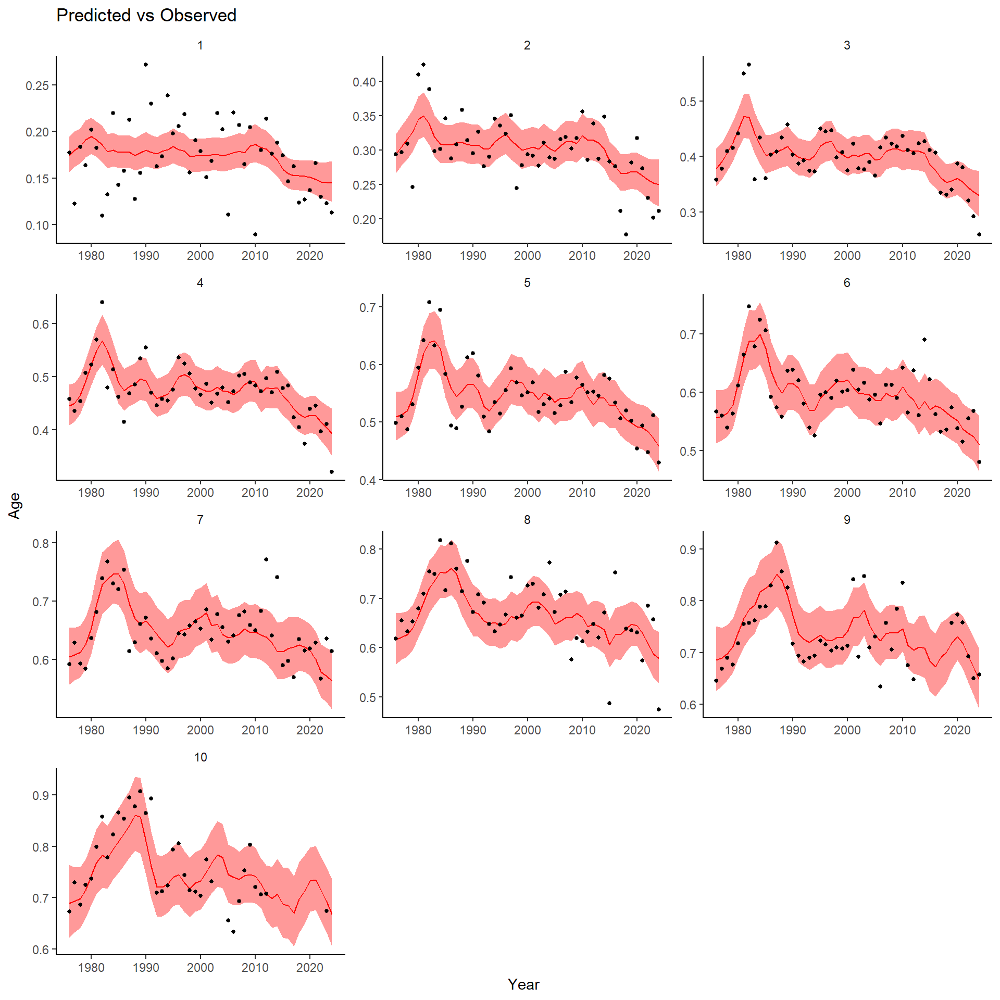
4.4 Predicted
armatrix.pred(waa.fit,scale='free',ncol=3)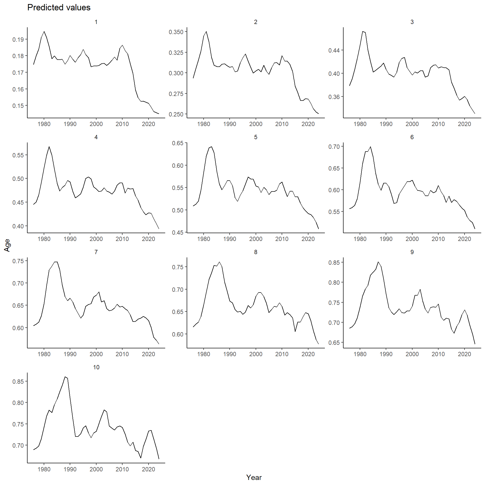
4.5 Resid bubble
armatrix.res(waa.fit)
## Warning: Removed 20 rows containing missing values or values outside the scale range (`geom_point()`).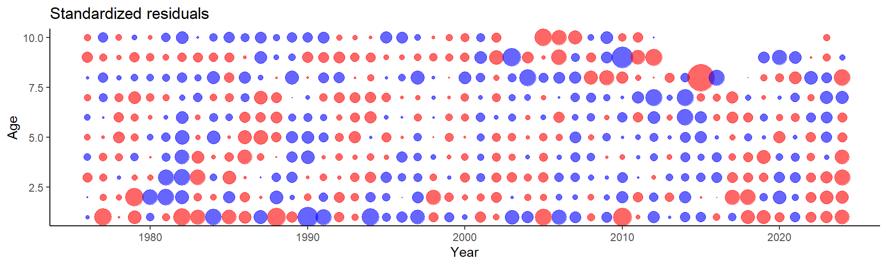
4.6 Resid dot
armatrix.res2(waa.fit)
## Warning: Removed 20 rows containing non-finite outside the scale range (`stat_smooth()`).
## Warning: Removed 20 rows containing missing values or values outside the scale range (`geom_text()`).
## Warning: Removed 20 rows containing non-finite outside the scale range (`stat_smooth()`).
## Warning: Removed 20 rows containing missing values or values outside the scale range (`geom_point()`).
## Removed 20 rows containing missing values or values outside the scale range (`geom_point()`).
## Removed 20 rows containing missing values or values outside the scale range (`geom_point()`).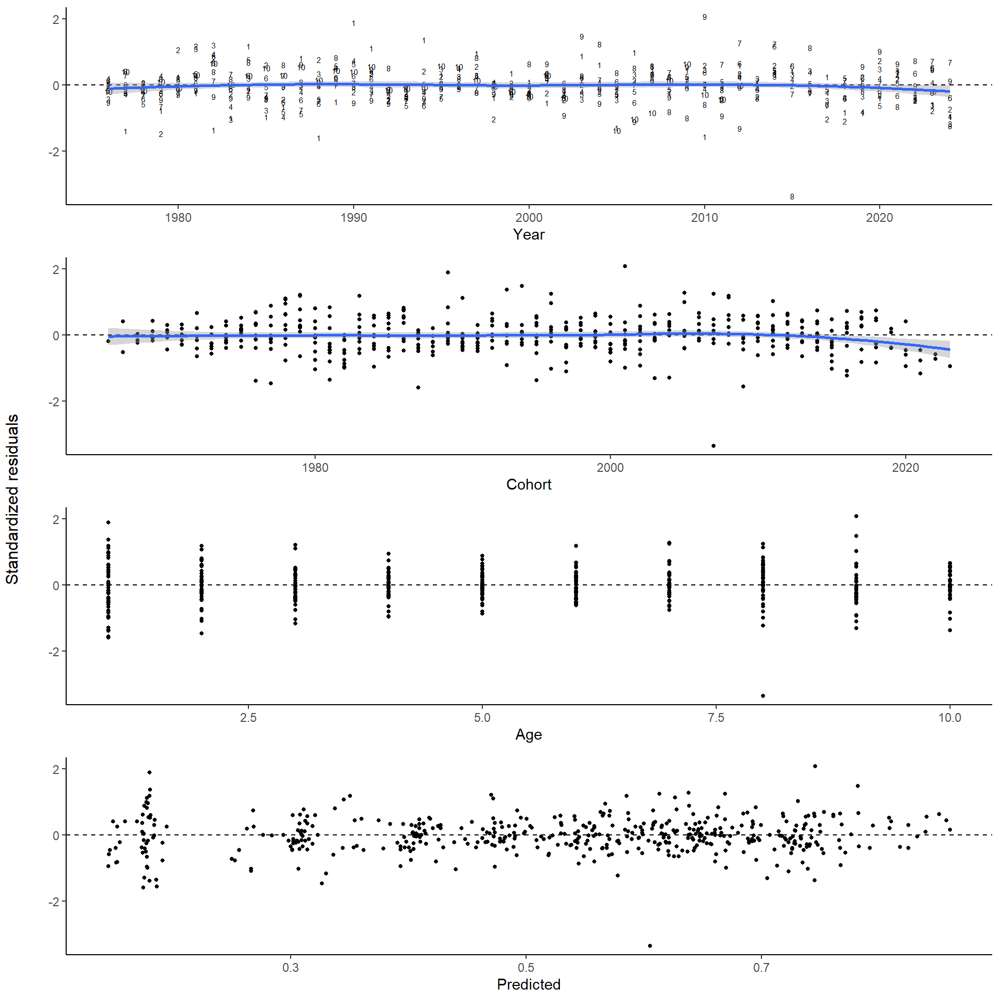
4.7 effects
armatrix.effects(waa.fit) # empty plot because of ggplotGrob function within (used to align plots)
4.8 cvs
armatrix.cvs(waa.fit,scale='free',ncol=3)
## Warning: Removed 13 rows containing missing values or values outside the scale range (`geom_line()`).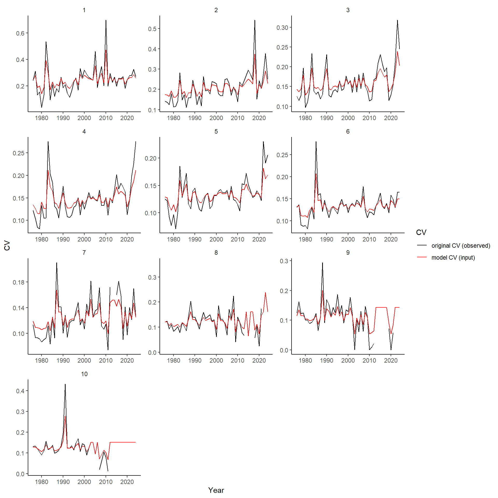